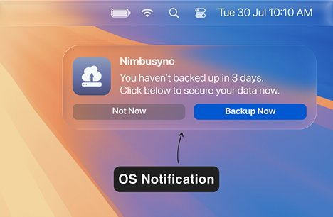
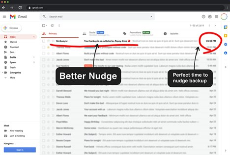
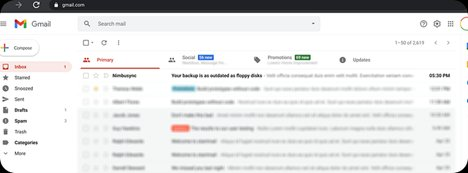

At 6.45 PM, I shut down my laptop after a long day — back-to-back meetings, client reports, and a mountain of emails I hadn't even opened yet. Over 200 unread messages sat in my inbox. Somewhere in there was a backup reminder email.
I didn't see it. I didn't open it. I didn't think about it.
The next morning, I turned on my laptop and it wouldn't boot. Something had gone wrong. And just like that, four days of work were gone.
No Backup. No recovery.
That's when it hit me. This wasn't just bad luck. It was a UX failure.
Why didn't I notice the reminder? Critical actions like backups are treated like spam. Not because they aren't important — but because they are invisible.
Research: What I Found
I conducted user interviews with 8 employees and collected feedback via surveys.
The Psychology of Ignored Nudges
What if we stopped relying solely on email, and instead redesigned the entire reminder experience around timing, emotion, and context?
Proposed UX Solutions

An OS-level notification at the right moment — login or shutdown — with a direct "Backup Now" CTA. Actionable, contextual, impossible to ignore.

A smarter nudge: the right subject line, delivered at the right time — 5:30 PM, just as the user is wrapping up for the day and about to shut down.

Email subject line and timing — visible at the top of the inbox, sent at 5:30 PM when the user is most likely to act before shutting down.
An email that requires understanding before acting has already failed.
The best reminder is the one that meets the user at the right moment, in the right context — not the one that gets lost in a sea of 200 unread messages.